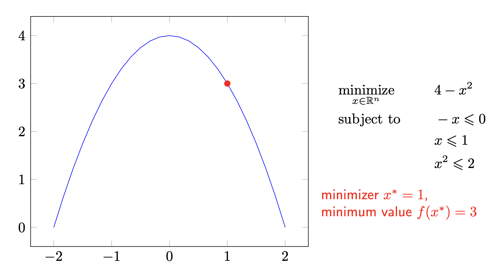

1. 머신러닝 개요 (Introduction)
머신러닝이란? (Machine learning)
이 강의의 핵심 목표는 머신러닝을 깊이 있게 연구·응용하는 데 필요한 토대를 다지는 것입니다. 머신러닝을 한 문장으로 정의하면, 데이터 \(x\) 로부터 학습하는 알고리즘에 대한 연구입니다.
가장 기본적인 구조는 입력 \(x\) 를 어떤 함수 \(f\) 에 통과시켜 출력 \(y\) 를 얻는 형태로 표현할 수 있습니다.
\[ x \;\longrightarrow\; f(x) \;\longrightarrow\; y \]
여기서 학습의 본질은, 좋은 출력 \(y\) 를 내놓는 함수 \(f\) 를 데이터로부터 찾아내는 것이라 할 수 있습니다.
머신러닝 문제의 유형 (Types of ML problems)
머신러닝 문제는 크게 지도 학습, 비지도 학습, 그리고 환경과의 상호작용 세 가지 범주로 나눌 수 있습니다.
지도 학습 (Supervised learning)
지도 학습은 입력 \(x\) 와 정답 레이블 \(y\) 가 짝지어진 데이터로 학습하는 방식이며, 출력 \(y\) 의 형태에 따라 다음과 같이 세분화됩니다.
- 이진/다중 분류 (Binary/Multiclass classification): 입력 \(x\) 가 주어지면, 이산적인 클래스 집합에서 \(y \in \{1, \dots, K\}\) 를 찾습니다.
- 회귀 (Regression): 입력 \(x\) 가 주어지면, 연속적인 값 \(y \in \mathbb{R}^d\) 를 찾습니다.
- 시퀀스 주석 (Sequence annotation): 시퀀스 \(x_1, \dots, x_n\) 이 주어지면, 그에 대응하는 출력 시퀀스 \(y_1, \dots, y_m\) 을 찾습니다.
- 예측 (Prediction): 현재 입력 \(x_t\) 와 과거 출력 \(y_1, \dots, y_{t-1}\) 이 주어졌을 때, 다음 출력 \(y_t\) 를 찾습니다.
예시: 분류 (Classification)
분류 문제를 직관적으로 이해하기 위해, 고양이 사진을 입력으로 받아 레이블을 출력하는 예시를 살펴보겠습니다.

여기서 한 가지 중요한 관점이 있습니다. 사람에게는 직관적인 “고양이”라는 개념이, 컴퓨터에게는 단지 거대한 숫자 격자(grid of numbers) 에 불과하다는 점입니다.

- 즉, 이미지는 본질적으로 \([0, 255]\) 사이의 값을 갖는 큰 숫자 격자입니다.
- 머신러닝 모델의 역할은 이 무의미해 보이는 숫자 배열로부터 의미 있는 레이블을 추론하는 함수 \(f\) 를 학습하는 것입니다.
비지도 학습 (Unsupervised learning)
비지도 학습은 정답 레이블 없이 데이터 \(x\) 자체의 구조나 패턴을 찾아내는 방식입니다.
- 군집화 (Clustering): 데이터를 대표하는 프로토타입(prototype) 집합을 찾습니다.
- 시퀀스 분석 (Sequence analysis): 관측값 뒤에 숨어 있는 잠재적 인과 시퀀스(latent causal sequence) 를 찾습니다. (HMM, Kalman Filter 등)
- 독립 성분 / 사전 학습 (Independent components / dictionary learning): 관측값을 구성하는 요인(factor) 집합을 찾습니다.
- 이상치 탐지 (Novelty detection): 다른 데이터와 동떨어진 “이상한 하나(odd one out)” 를 찾습니다.
예시: 독립 성분 분석 (Independent Component Analysis, ICA)
비지도 학습의 대표적 예시로 칵테일 파티 문제(cocktail party problem) 가 있습니다.

예시: 정규화 절단 (Normalized cuts)
군집화/분할의 또 다른 예시로, 이미지의 픽셀들을 의미 있는 영역으로 분할하는 정규화 절단 기법이 있습니다.

예시: 주성분 분석 (Principal Component Analysis, PCA)
데이터의 분산을 가장 잘 설명하는 축(주성분)을 찾는 PCA 또한 대표적인 비지도 학습 기법입니다.

환경과의 상호작용 (Interaction with environments)
세 번째 범주는 학습자(agent)가 환경과 능동적으로 상호작용하며 학습하는 방식입니다.
- 온라인 학습 (Online): 입력 \(x_t\) 를 관측하고, 예측 \(f(x_t)\) 를 내놓은 뒤, 실제 정답 \(y_t\) 를 관측하며 순차적으로 학습합니다.
- 능동 학습 (Active learning): 모델이 직접 정보가 될 만한 \(x_t\) 에 대한 레이블 \(y_t\) 를 질의(query)하여 모델을 개선하고, 다음에 질의할 \(x\) 를 선택합니다.
- 밴딧 (Bandits): 여러 선택지(arm) 중 하나를 고르고 보상을 받은 뒤 다음 선택을 하는 문제로, 상태가 하나뿐인(one-state) 혹은 상태 없는(stateless) 강화학습으로도 볼 수 있습니다.
- 강화 학습 (Reinforcement learning): 행동을 취하면 환경이 반응하고, 그에 따라 다시 새로운 행동을 취하는 본격적인 순차적 의사결정 문제입니다.
강화 학습의 기본 구조
강화 학습의 상호작용 루프는 다음과 같이 도식화됩니다.

예시 1: 로봇 보행 (Robot locomotion)

예시 2: Atari 게임

- 여기서 제기되는 핵심 질문은 “가능한 이미지 상태(image state)의 구성은 몇 가지인가?” 입니다. 이는 상태 공간이 얼마나 거대한지를 가늠하게 하는 질문입니다.
예시 3: 바둑 (Go)

- Atari와 바둑 예시에서 반복되는 “가능한 상태의 수는?”이라는 질문의 의도는 분명합니다. 상태 공간이 너무나 거대하여 모든 상태를 일일이 다룰 수 없기 때문에, 함수 근사(function approximation)와 같은 학습 기반 접근이 필수적이라는 점을 강조하기 위함입니다.
판별 모델 vs. 생성 모델 (Discriminative vs. Generative)
머신러닝 모델은 무엇을 추정하느냐에 따라 판별 모델과 생성 모델로 구분할 수 있습니다.
핵심 정의
- 판별 모델 (Discriminative models)
- 조건부 확률 \(p(y \mid x)\) 를 직접(directly) 추정합니다.
- 종종 더 나은 수렴(convergence)과 더 단순한 해(solution)로 이어집니다.
- 생성 모델 (Generative models)
- 결합 분포(joint distribution) \(p(y, x)\) 를 추정합니다.
- 조건부 확률의 정의를 이용해 \(p(y \mid x)\) 를 추론합니다. \[ p(y \mid x) = \frac{p(y, x)}{p(x)} \]
- 데이터 분포 \(p(x)\) 를 알고 있으므로, 이를 이용해 새로운 데이터를 생성(generate) 할 수 있습니다.
보충 설명: 위 식은 확률의 기본 정의인 조건부 확률 \(p(y \mid x) = \frac{p(x, y)}{p(x)}\) 에서 곧바로 따라옵니다. 판별 모델은 분류 경계(decision boundary)에만 집중하는 반면, 생성 모델은 데이터가 “어떻게 생성되었는가”라는 더 풍부한 정보까지 모델링한다는 차이가 있습니다.
판별 모델의 특징

- 판별 모델은 오직 조건부 확률 추정에만 관심을 둡니다.
- 따라서 데이터의 실제 분포가 매우 복잡할 때 특히 좋은 성능을 보입니다. 분포 전체를 모델링하는 부담 없이, 클래스를 가르는 경계만 잘 찾으면 되기 때문입니다.
생성 모델의 특징
생성 모델은 데이터 분포 \(p(x)\) 자체를 모델링하며, 최근의 다양한 생성 AI가 이 범주에 속합니다.

2. 수리 최적화 개요 (Optimization overview)
거의 모든 머신러닝 알고리즘은 결국 어떤 목적 함수를 최소화(또는 최대화)하는 문제로 귀결됩니다. 따라서 최적화는 머신러닝의 핵심 엔진입니다.
최적화 문제의 정의 (Mathematical optimization)
정의 1 (최적화 문제의 기본 형태)
\[ \begin{aligned} \underset{x \in \mathbb{R}^n}{\text{minimize}} \quad & f(x) \\ \text{subject to} \quad & h_i(x) \leq b_i, \quad \forall i = 1, \dots, m \end{aligned} \]
각 구성 요소의 의미는 다음과 같습니다.
- 최적화 변수 (optimization variable): \(x = (x_1, \dots, x_n)\), 우리가 조정할 수 있는 변수입니다.
- 목적 함수 (objective function): \(f : \mathbb{R}^n \to \mathbb{R}\), 최소화하고자 하는 대상입니다.
- 제약 함수 (constraint function): \(h_i : \mathbb{R}^n \to \mathbb{R}\), 해가 만족해야 하는 조건을 정의합니다.
- 최소화 해 (minimizer / solution): \(x^* \in \mathbb{R}^n\), 모든 제약 조건을 만족하는 벡터들 중에서 가장 작은 목적 함수 값을 갖는 벡터입니다.
전역 최소와 국소 최소 (Global and local minimum)
최적화에서 “최소”라는 개념은 그 범위에 따라 둘로 나뉩니다.
정의 2 (전역 최소, Global minimum)
정의역 \(\mathcal{X}\) 위에서 정의된 실수값 함수 \(f\) 가 \(x^*\) 에서 전역 최소를 갖는다는 것은, 모든 \(x \in \mathcal{X}\) 에 대해 다음이 성립함을 의미합니다. \[ f(x^*) \leq f(x) \]
정의 3 (국소 최소, Local minimum)
함수 \(f\) 가 \(x^*\) 에서 국소 최소를 갖는다는 것은, 어떤 \(\epsilon > 0\) 이 존재하여 \(x^*\) 의 \(\epsilon\)-근방 안의 모든 점에 대해 다음이 성립함을 의미합니다. \[ f(x^*) \leq f(x) \quad \text{for all } x \in \mathcal{X} \cap B(x^*, \epsilon) \] 여기서 \(B(x^*, \epsilon)\) 는 \(x^*\) 와의 거리가 \(\epsilon\) 보다 작은 점들의 집합입니다.
- 핵심 차이는 비교 범위입니다. 전역 최소는 정의역 전체와 비교하지만, 국소 최소는 자기 주변의 작은 공(ball) 안에서만 가장 작으면 됩니다.
예시 (Example)
다음과 같은 간단한 제약 최적화 문제를 살펴보겠습니다.
\[ \begin{aligned} \underset{x \in \mathbb{R}^n}{\text{minimize}} \quad & 4 - x^2 \\ \text{subject to} \quad & -x \leq 0 \\ & x \leq 1 \\ & x^2 \leq 2 \end{aligned} \]

이 문제의 해를 단계별로 분석해 보겠습니다.
- 제약 조건 정리:
- \(-x \leq 0 \Rightarrow x \geq 0\)
- \(x \leq 1\)
- \(x^2 \leq 2 \Rightarrow -\sqrt{2} \leq x \leq \sqrt{2}\)
- 세 조건을 모두 만족하는 가능 영역(feasible region) 은 \(0 \leq x \leq 1\) 입니다. (\(x \le 1\) 이 가장 강한 상한 조건이기 때문입니다.)
- 목적 함수 \(f(x) = 4 - x^2\) 는 \(x\) 가 커질수록 감소하는 함수입니다. 따라서 가능 영역 \([0, 1]\) 안에서 \(f\) 를 최소화하려면 \(x\) 를 최대한 크게 해야 합니다.
이로부터 다음 결론을 얻습니다.
- 최소화 해: \(x^* = 1\)
- 최소값: \(f(x^*) = 4 - 1^2 = 3\)
비제약 최소화 (Unconstrained minimization)
이제 제약이 없는 가장 기본적인 형태를 생각해 봅니다.
\[ \underset{x \in \mathbb{R}^n}{\text{minimize}} \quad f(x) \]
논의를 위해 다음을 가정합니다.
- \(f\) 는 미분 가능(differentiable) 하다.
- 최적값 \(x^* = \arg\inf_x f(x)\) 가 달성(attained) 된다.
목표는 정의역 안의 점들의 수열 \(\{x^{(k)}\}_{k \in \mathbb{N}_0} \subseteq \text{dom} f\) 를 만들어, 다음이 성립하게 하는 것입니다.
\[ f(x^{(k)}) \to f(x^*) \quad \text{as } k \to \infty \]
즉, 반복(iteration)을 거듭할수록 목적 함수 값이 최적값에 수렴하는 알고리즘을 설계하는 것이 핵심입니다.
강하법 (Descent methods)
강하법의 기본 아이디어는, 매 반복마다 함수값이 줄어드는 방향으로 한 걸음씩 이동하는 것입니다. 갱신 규칙은 다음과 같습니다.
\[ x^{(k+1)} = x^{(k)} + t^{(k)} \Delta x^{(k)} \]
여기서 \(\Delta x^{(k)}\) 는 이동 방향, \(t^{(k)}\) 는 걸음 크기(step size) 이며, 목표는 \(f(x^{(k+1)}) < f(x^{(k)})\) 를 만족시키는 것입니다.
1차 근사를 통한 강하 조건 유도
함수값이 줄어드는 방향을 찾기 위해, 테일러 1차 근사(first-order approximation) 를 사용합니다. \(t\) 가 충분히 작을 때,
\[ f(x + t \Delta x) \approx f(x) + t \nabla f(x)^\top \Delta x \]
이 근사에서 \(f(x + t\Delta x) < f(x)\) 가 되려면, 두 번째 항이 음수여야 합니다. 즉,
\[ t \nabla f(x)^\top \Delta x < 0 \]
\(t > 0\) 이므로 결국 다음 조건이 필요합니다.
- 방향 도함수 (Directional derivative): \(t=0\) 에서의 변화율은 다음과 같습니다. \[ \left. \frac{d}{dt} f(x + t\Delta x) \right|_{t=0} = \nabla f(x)^\top \Delta x \]
- 강하 조건 (Descent condition): \[ \nabla f(x)^\top \Delta x < 0 \]
이 조건이 의미하는 바를 기하학적으로 해석하면 다음과 같습니다.
- \(\nabla f(x)^\top \Delta x < 0\) 은 두 벡터 \(\nabla f(x)\) 와 \(\Delta x\) 사이의 각 \(\theta\) 가 \(90^\circ\) 보다 큰 둔각(obtuse angle) 임을 의미합니다.
- 즉, 그래디언트와 둔각을 이루는 어떤 방향이든 함수값을 감소시킵니다.
- 이 조건을 만족하는 \(\Delta x\) 를 강하 방향(descent direction) 이라 부르며, 충분히 작은 \(t > 0\) 에 대해 \(f(x + t\Delta x) < f(x)\) 가 보장됩니다.
직선 탐색 (Line search)
강하 방향 \(\Delta x\) 를 정했다면, 얼마나 멀리 갈지(걸음 크기 \(t\))를 정해야 합니다.
정확한 직선 탐색 (Exact line search): 해당 방향에서 함수값을 최소로 만드는 \(t\) 를 직접 구합니다. \[ t = \underset{t > 0}{\arg\min}\ f(x + t \Delta x) \]
역추적 직선 탐색 (Backtracking line search): 실제로는 정확한 최소화가 비싸므로, 충분히 좋은 감소가 확인될 때까지 걸음 크기를 점점 줄여나가는 휴리스틱을 씁니다.
주어진 값: x, Δx, f, t0, c ∈ (0, 0.5), τ ∈ (0, 1).
t = t0 으로 설정한다.
repeat
t = τ·t
until f(x) − f(x + tΔx) ≥ −c·t·⟨∇f(x), Δx⟩- \(\tau \in (0,1)\) 은 매 반복마다 걸음 크기를 줄이는 비율이며, \(c \in (0, 0.5)\) 는 “충분한 감소”의 기준을 정하는 상수입니다. 이 종료 조건은 Armijo 조건으로 알려진, 함수값이 충분히 감소했는지를 판정하는 부등식입니다.
경사하강법 (Gradient descent method)
강하법에서 방향을 \(\Delta x = -\nabla f(x)\) 로 택하면, 가장 유명한 경사하강법이 됩니다.
시작점 x ∈ dom f 가 주어진다.
repeat
1. Δx := −∇f(x)
2. 직선 탐색(Line search): 걸음 크기 t > 0 를 선택한다.
3. 갱신(Update): x := x + tΔx
until 종료 조건이 만족될 때까지- 종료 조건(stopping criterion): 일반적으로 그래디언트의 크기가 충분히 작아지는 조건, 즉 \(\lVert \nabla f(x) \rVert_2 \leq \epsilon\) 을 사용합니다. 이는 거의 정류점(stationary point)에 도달했음을 의미합니다.
참고로 수렴성 분석(convergence analysis)에 대한 자세한 논의는 대학원 수준의 머신러닝 강의에서 다룬다고 강의에서 언급되었습니다.
왜 음의 그래디언트가 최급강하 방향인가? (Why is the negative gradient the direction of the steepest descent?)
경사하강법이 하필 \(-\nabla f(x)\) 방향을 택하는 이유를 엄밀하게 증명해 보겠습니다.
정의 4 (방향 도함수, Directional derivative)
점 \(x \in \text{dom} f\) 에서 임의의 단위 벡터 \(v\) 방향으로의 함수 \(f\) 의 변화율을 방향 도함수 \(D_v f(x)\) 라 하며, 다음과 같이 정의됩니다. \[ D_v f(x) = \lim_{h \to 0} \frac{f(x + hv) - f(x)}{h} \]
이제 우리의 질문은 다음과 같이 번역됩니다.
“함수 \(f\) 의 \(x\) 에서의 최급강하(steepest descent) 방향은 무엇인가?” \(\Longleftrightarrow\) “어떤 단위 벡터 \(v\) 에 대해 \(D_v f(x)\) 가 최소가 되는가?”
1단계: 방향 도함수를 그래디언트로 표현
\(f\) 가 \(x\) 에서 미분 가능하다면, 위 극한은 그래디언트와의 내적으로 정리됩니다.
\[ D_v f(x) = \nabla_x f(x)^\top v \]
보충 설명: 이는 다변수 함수의 1차 테일러 전개 \(f(x + hv) = f(x) + h\,\nabla f(x)^\top v + o(h)\) 를 방향 도함수 정의식에 대입하면 곧바로 얻어집니다. 즉, 한 방향으로의 순간 변화율은 그 방향과 그래디언트의 내적과 같습니다.
2단계: 코사인 법칙(내적의 기하학적 의미) 적용
내적은 두 벡터의 크기와 사잇각으로 표현할 수 있습니다. \(v\) 가 단위 벡터(\(\lVert v \rVert = 1\))이므로,
\[ D_v f(x) = \lVert \nabla_x f(x) \rVert\, \lVert v \rVert \cos\theta = \lVert \nabla_x f(x) \rVert \cos\theta \]
여기서 \(\theta\) 는 \(\nabla_x f(x)\) 와 \(v\) 사이의 각입니다.
3단계: 최소화
위 식에서 \(\lVert \nabla_x f(x) \rVert\) 는 \(v\) 에 의존하지 않는 고정된 값이므로, \(D_v f(x)\) 를 최소화하는 것은 \(\cos\theta\) 를 최소화하는 것과 같습니다.
- \(\cos\theta\) 는 \(\theta = 180^\circ\) 일 때, 즉 두 벡터가 정확히 반대 방향을 가리킬 때 최소값 \(-1\) 을 가집니다.
- 따라서 방향 도함수의 최소값은 다음과 같습니다. \[ \min_v D_v f(x) = -\lVert \nabla_x f(x) \rVert \]
- 그리고 이 최소값은 \(v\) 가 \(-\nabla_x f(x)\) 방향을 가리킬 때 달성됩니다.
결론적으로, 음의 그래디언트 방향이 함수값을 가장 가파르게 감소시키는 최급강하 방향임이 증명됩니다. 이것이 경사하강법이 \(-\nabla f(x)\) 를 택하는 수학적 근거입니다.
확률적 경사하강법 (Stochastic gradient descent, SGD)
머신러닝에서 목적 함수는 흔히 개별 데이터에 대한 손실의 합(또는 평균) 형태를 가집니다.
\[ f(x) = \frac{1}{n} \sum_{i=1}^{n} f_i(x) \]
여기서 각 항 \(f_i(x)\) 는 데이터셋의 \(i\)-번째 관측치에 대응하는 손실입니다.
- 표준(배치) 경사하강법: 매 갱신마다 전체 데이터에 대한 그래디언트를 계산합니다. \[
x := x - \eta \nabla f(x) = x - \eta \sum_{i=1}^{n} \frac{1}{n} \nabla f_i(x)
\]
- 문제점: \(n\) 이 매우 크면 매 스텝마다 전체 합을 계산하는 비용이 지나치게 비쌉니다.
- 확률적 경사하강법(SGD): 매 스텝마다 하나의 항 \(f_i\) 를 무작위로 샘플링하여 그래디언트를 근사합니다. \[
x := x - \eta \nabla f_i(x)
\]
- 한 개의 샘플만으로 전체 그래디언트를 추정하므로, 계산 비용을 극적으로 줄여 확장성(scalability) 을 확보합니다.
미니배치 SGD (Minibatch SGD)
미니배치 SGD는 전체 그래디언트(배치)와 단일 샘플 그래디언트(SGD) 사이의 절충안입니다.
- 단일 샘플 대신 작은 묶음(minibatch, 크기 \(m\))을 사용하여 그래디언트를 추정합니다.
- 이를 통해 그래디언트 추정치의 분산(variance)을 줄일 수 있습니다.
- 실무적으로는, 미니배치 크기를 메모리에 맞게 설정하여 벡터화된 병렬 계산(vector-process) 의 이점을 누립니다.
알고리즘은 다음과 같습니다.
시작점 x ∈ dom f 가 주어진다.
repeat
1. 데이터를 섞는다(Shuffle).
2. i = 0, ..., ⌈n/m⌉ − 1 의 각 미니배치 시퀀스에 대해:
a. 강하 방향(= 음의 미니배치 그래디언트)을 계산한다.
Δx = −(1/m) Σ_{j=1}^{m} ∇f_{m·i+j}(x)
b. 걸음 크기를 갱신한다. t := Update(t)
c. x 를 갱신한다. x := x + tΔx
3. 걸음 크기를 감쇠시킨다(Decay).
until 종료 조건이 만족될 때까지- 한 번의 전체 데이터 순회(epoch)마다 데이터를 섞고, 크기 \(m\) 의 미니배치 단위로 순차적으로 갱신하며, 에폭이 끝날 때마다 학습률을 감쇠시키는 구조입니다.